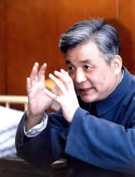

邓稼先
邓稼先（1924—1986），安徽省合肥人，中国著名核物理学家和“两弹一星”功勋专家。他长期从事核武器研发工作，为国家的国防事业作出了重大贡献。
邓稼先以严谨、勤勉、创新著称，致力于科研事业，不畏艰难，为国家核武器研发和科学发展提供了重要保障。他以实际行动践行科学报国的理念。
在家庭和个人修养方面，邓稼先注重诚实、勤俭、责任感和科学精神。他教育子女和青年要忠于国家、勇于担当，培养严谨治学、无私奉献的品格，将个人发展与国家利益紧密结合。
邓稼先的家风和科研精神，为安徽乃至全国红色教育和科技教育提供了宝贵榜样。他的事迹激励了无数青年投身科学事业和国家建设。
← 返回中国地图